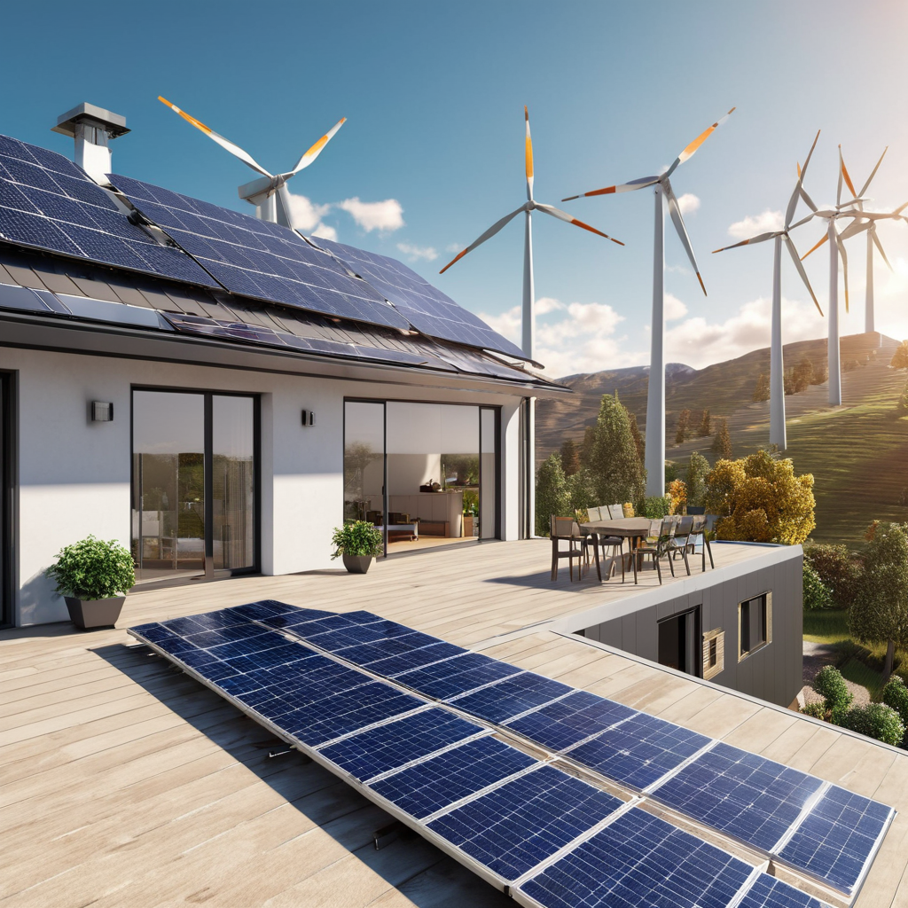
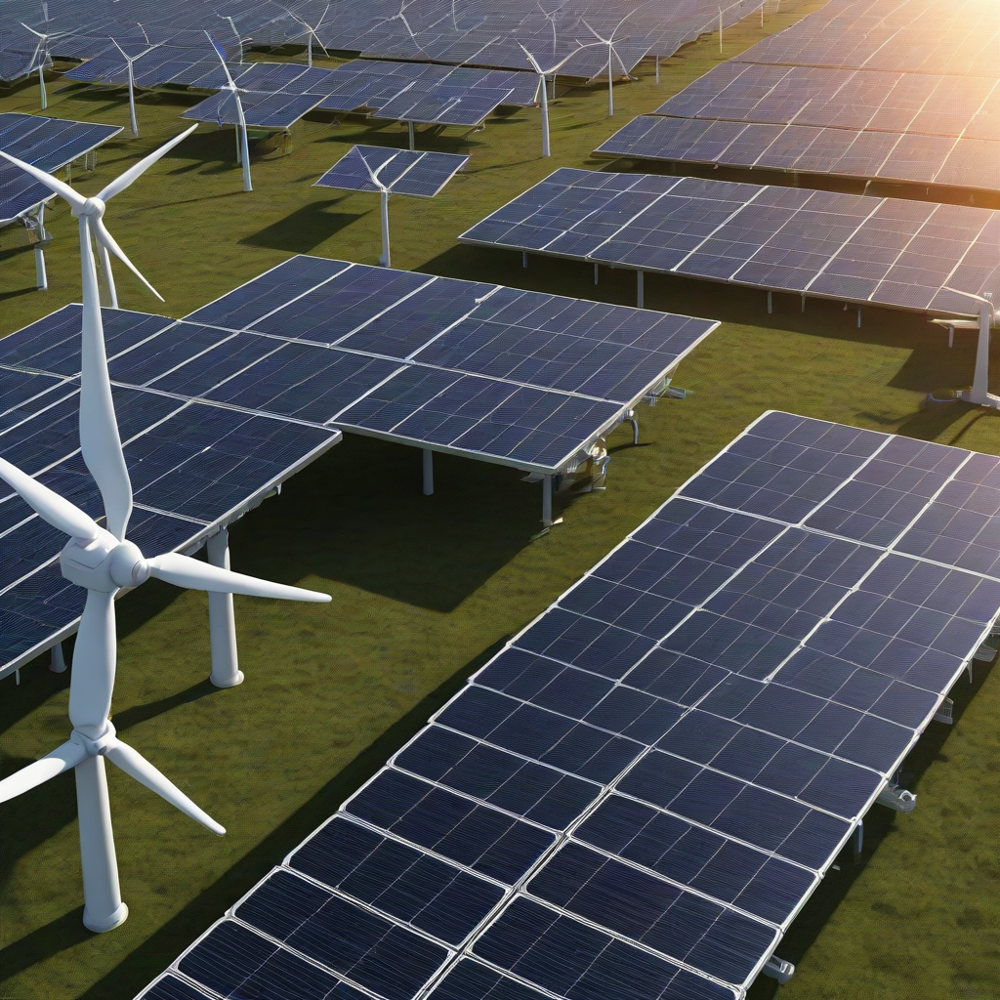
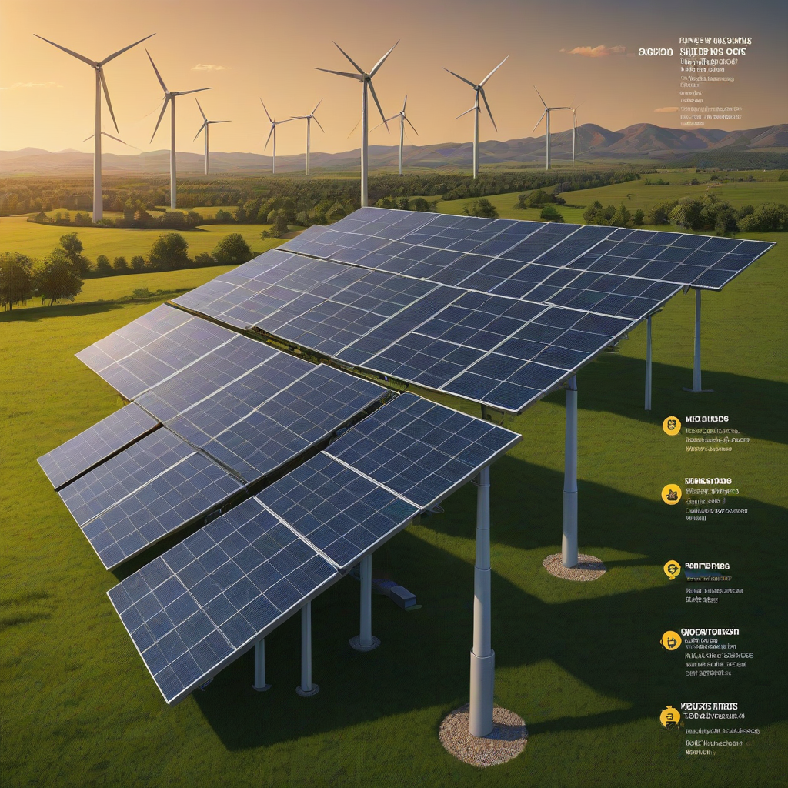

Solar panels vs wind turbines: Full Comparison (2026)
Learn everything about solar panels vs wind turbines in 2026. Costs, comparisons, expert tips, and buyer's advice for US homeowners.
Updated 2026-05-26. Informational only. Consult a licensed solar installer for your specific project.

For most U.S. homeowners, solar panels are the better choice in 2026 due to lower installation complexity, predictable energy output, falling panel costs, and strong federal incentives. Wind turbines only make sense if you live in a consistently high-wind area (≥12 mph average), have ample open space, and meet strict zoning requirements.
Deciding between solar panels and wind turbines for your home isn’t just about picking the “greenest” option—it’s about matching the technology to *your* location, budget, and goals. With solar prices dropping 42% since 2020 (NREL, 2026) and new federal incentives extending through 2032, solar has become the default for most households. But wind energy still offers compelling advantages in the right environment—especially for rural or coastal properties with steady wind flow.
In this deep dive, we cut through the marketing hype and analyze real-world 2026 data: upfront costs, long-term ROI, installation realities, and performance under actual U.S. climate conditions. Whether you’re in sun-drenched Arizona or the windy Great Plains, you’ll walk away knowing exactly which system delivers the most value for *your* situation.
What is Solar Panels vs Wind Turbines and Why It Matters

Solar panels and wind turbines both convert natural energy into electricity—but they do it in fundamentally different ways. Solar panels use photovoltaic (PV) cells to transform sunlight directly into DC electricity, while wind turbines use blades to spin a generator, creating AC power. This core difference drives every practical consideration: cost, reliability, space needs, and suitability for your property.
Main Differences
Energy Source: Sunlight (intermittent but predictable daily/seasonal patterns) vs. wind (highly variable—needs consistent, strong flow)
Footprint: Solar requires roof or ground space; turbines need clearance (typically 2+ acres for residential-scale)
Scalability: Solar scales linearly (add more panels); wind output depends heavily on height and local turbulence
Decision Factors
Ask yourself these before choosing:
What’s your average wind speed? (Check the DOE Wind Map)
Do you have zoning restri

ctions? (Many suburbs ban turbines over 30 ft)
How much roof space do you have? (Solar works on most roofs; wind needs tall towers + open land)
What’s your budget? (Wind has higher upfront cost per kW in most cases)
More complex electrical integration (charge controllers, inverters)
Higher permitting and engineering fees
Performance Comparison
Performance hinges on *your* microclimate—not manufacturer claims. Here’s how they stack up in real U.S. conditions:
Solar output: Highly predictable—peaks at midday, zero at night. Summer output can be 2–3× higher than winter. Output drops ~0.5% per year (degradation).
Wind output: Unpredictable day-to-day. A turbine may produce near full capacity for hours—or nothing for days. Most residential turbines generate less than 20% of nameplate capacity on average (NREL).
Example: A 5 kW turbine rated for “10,000 kWh/year” might only deliver 1,200–1,800 kWh/month in low-wind areas (e.g., Midwest suburbs), while a 5 kW solar array delivers 600–850 kWh/month in the same zone.
Assume a 6 kW system sized to cover 100% of a 900 kWh/month usage:
Cost Component
Solar Panels
Wind Turbine
Equipment & Panels
$10,200–$14,400
$22,000–$36,000
Inverter & Wiring
$1,200–$2,000
$3,000–$5,000
Mounting & Labor
$3,000–$4,500
$5,000–$10,000
Permitting & Engineering
$500–$1,200
$1,500–$3,000
Total (pre-ITC)
$14,900–$22,100
$31,500–$54,000
After 30% ITC
$10,430–$15,470
$22,050–$37,800
Note: Battery storage (e.g., Tesla Powerwall: $11,500–$15,500, Enphase IQ Battery: $4,000–$8,000) adds significantly to both—but is often essential for wind to offset intermittency.
Payback Period & ROI
Payback Calculation (Example: 6 kW system in Texas)
Solar:
- Cost after ITC: $12,500
- Annual energy production: ~9,000 kWh
- Electricity offset value (at $0.13/kWh): $1,170/year
- Payback: ~10.7 years
- 25-year ROI: ~$18,000 (after system life)
Wind:
- Cost after ITC: $27,000
- Realistic annual production: ~5,400 kWh (30% capacity factor)
- Electricity offset value: $702/year
- Payback: ~38.5 years (longer than turbine lifespan)
Wind only beats solar on payback in areas with exceptional wind resources (e.g., coastal Maine, high plains) and favorable net metering. For most homeowners, solar delivers a 15–25% ROI over 25 years—while wind often barely breaks even.
Pros and Cons
Solar Panels: Strengths & Weaknesses
Pros
Minimal maintenance (no moving parts)
Works in most U.S. climates (even cloudy ones)
Quiet, no visual disruption (coexists with roof aesthetics)
Scalable: Start small, expand later
Strongest incentives: 30% ITC + state rebates + SRECs
Weaknesses
No generation at night (requires batteries for off-grid)
Output reduced by shading, dust, snow
Roof must be structurally sound and unshaded
Panel efficiency still lags (15–23% for most residential models)
Best Use Cases
Urban/suburban homes with south-facing roofs
Properties with shading issues (wind needs open space)
Budget-conscious homeowners prioritizing fast ROI
Wind Turbines: Strengths & Weaknesses
Pros
Generates power day and night (if wind blows)
Higher capacity factor *only* in high-wind zones (e.g., >12 mph avg)
Less land use per kWh in open rural areas
Can complement solar in hybrid setups
Weaknesses
High upfront cost and complex permitting
Visual and noise impact (NIMBY complaints common)
Blade failure risk (ice, lightning, bearing wear)
Turbine height often prohibited by HOA/zoning laws
Best Use Cases
Rural properties (5+ acres) with consistent wind ≥12 mph
Off-grid cabins in windy areas (with robust battery bank)
Farm operations needing backup power
Frequently Asked Questions
Which is better for homes?
Solar panels win for 90% of homes. They’re cheaper, easier to install, face fewer regulatory hurdles, and work reliably in most climates. Only choose wind if you’re in a high-wind zone with no roof space and open land—and even then, solar + battery is usually more cost-effective. Check your local wind map first!
What’s the real cost difference?
For equivalent energy output, wind costs 1.5–2× more than solar in 2026. A typical 6 kW solar system costs $12,500 after the 30% federal tax credit, while wind clocks in near $27,000. And wind’s payback period often exceeds its 20–25 year lifespan.
Installation difficulty?
Solar: DIY kits exist (e.g., Renogy, Eco-Worthy), but professional installation is recommended for grid-tie systems. Most installs take ≤2 days.
Wind: Almost always requires pros. Tower erection demands cranes and rigging expertise. DIY wind is not recommended—safety risks and permit issues are extremely high.
Do wind turbines work well in cities?
No. Urban areas have turbulent, low-speed wind (<5–7 mph avg), and turbines need height to access consistent flow. Rooftop turbines often underperform by 50%+ vs. rated output. Solar panels thrive in cities—even on shaded or east/west roofs.
Can I use both together?
Yes—and it’s smart for off-grid or backup systems. Solar covers daytime peaks; wind adds overnight/winter generation. Hybrid controllers (e.g., OutBack Radian) balance both. But for grid-tied homes, solar alone usually suffices.
What’s the best battery to pair?
For solar: Enphase IQ Battery 5/10/15 ($4,000–$8,000) offers modular, high-efficiency storage. For wind (which fluctuates more): Tesla Powerwall 2 ($11,500–$15,500) provides robust cycling and seamless grid support. Always size batteries for your lowest production season—not peak output.
Conclusion
By the numbers, solar panels are the clear winner for most U.S. homeowners in 2026. They’re cheaper, easier to deploy, and deliver predictable returns—even in cloudy states like Washington or Oregon. Wind turbines remain a niche solution: viable only for properties with exceptional wind, space, and zoning approval.
Best for Most People
Solar panels + battery backup. Go with Tier-1 panels (e.g., SunPower, LG, Panasonic) for longevity, and pair with Enphase or Tesla storage for resilience. You’ll get the fastest payback and highest ROI.
Budget Pick
Solar-only system without batteries. At $2.75/W installed (post-ITC), a 6 kW solar array costs ~$16,500 upfront, pays for itself in under 9 years, and saves $25,000+ over 25 years.